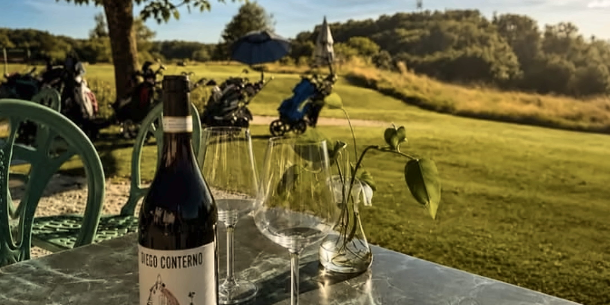
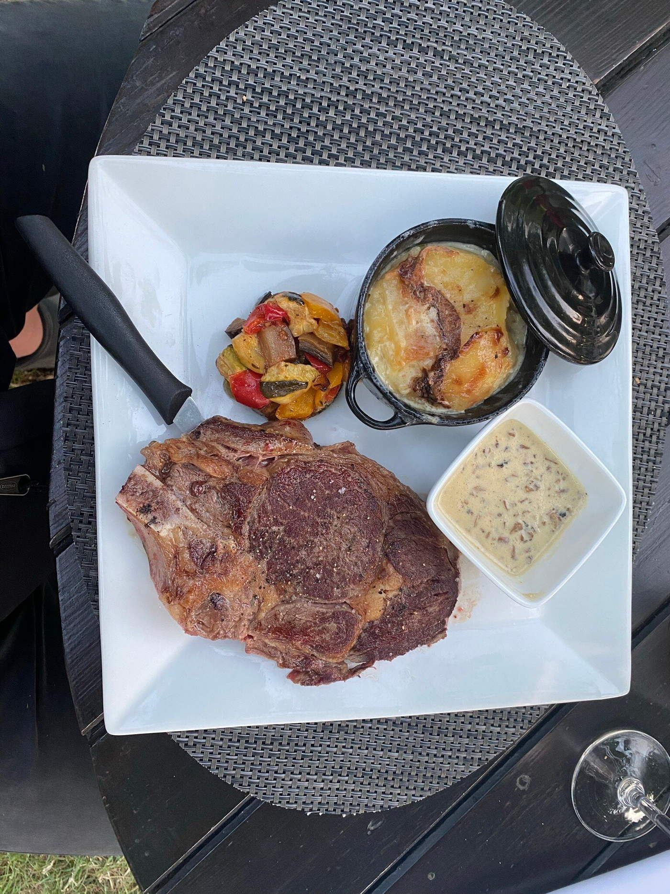
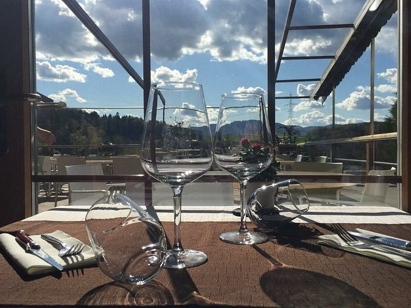

Le restaurant
Une cuisine soignée,
un cadre de campagne
Au cœur du Gros-de-Vaud, Le 9 est le restaurant du Golf du Domaine du Brésil. On y vient pour la vue sur le parcours, le calme des lieux et une cuisine faite maison.

Photo à ajouterLe lieu, bande largelieu-pano.jpg
La table
La carte suit les saisons et reste courte : ce qui est proposé est travaillé sur place. Entrées, viandes, poissons, pâtes et desserts, avec le label Fait Maison.
Une carte des golfeurs, plus rapide, permet de déjeuner entre deux parcours sans y passer l’après-midi.

Photo à ajouterUn platplat-04.jpg
La salle
Une salle sobre, des tables espacées, de grandes baies tournées vers le parcours. On entend le service, pas la table d’à côté.
Repas de famille, réunion d’entreprise, événement privé : la maison prend les groupes. capacité à préciser

Photo à ajouterLa vue depuis la sallesalle-01.jpg
En cuisine
Le chef Jérôme Rochat à confirmer
Une cuisine créative qui cherche à faire plaisir aux gourmands, petits et grands, sans en faire trop.
Produits de saison, sauces et pâtisseries maison, une carte qui bouge avec les arrivages.
Cuisine faite maison, produits de saison, label Fait Maison
Terrasse ouverte sur le parcours et les collines du Gros-de-Vaud
Ouverte à tous, golfeurs et non-golfeurs, midi et soir